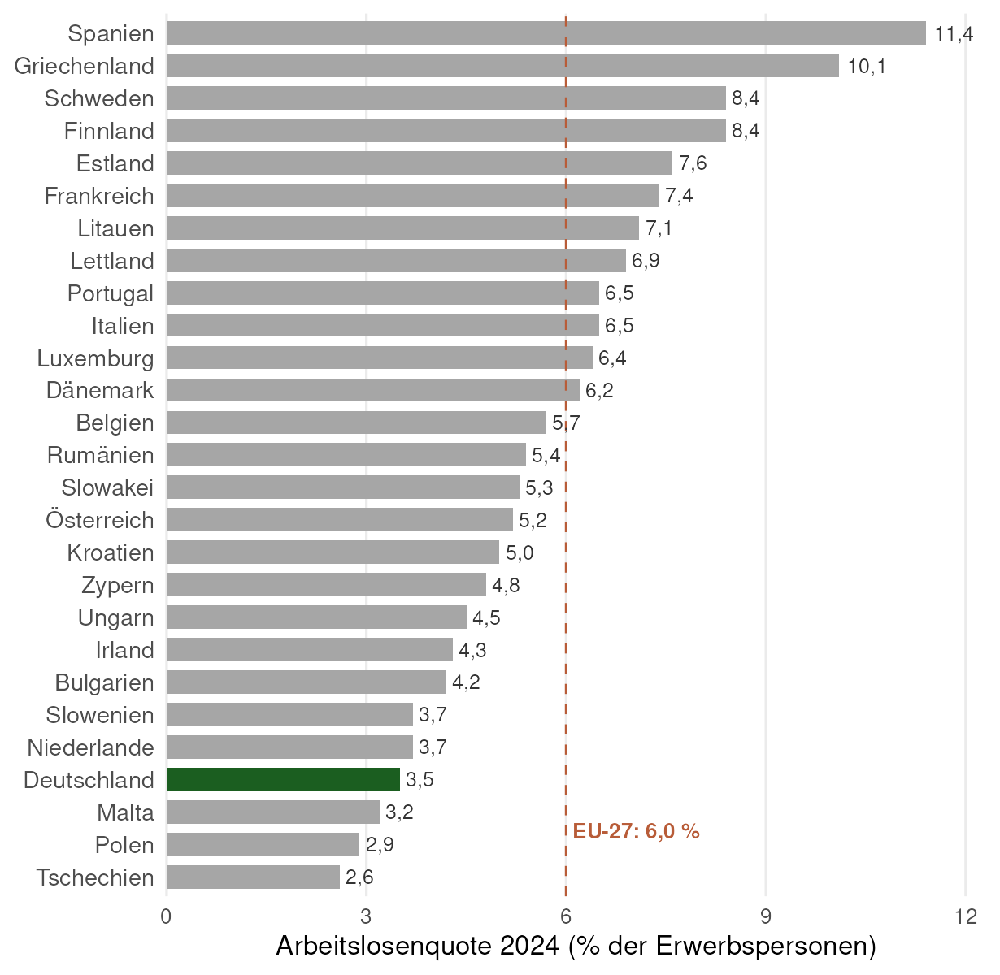
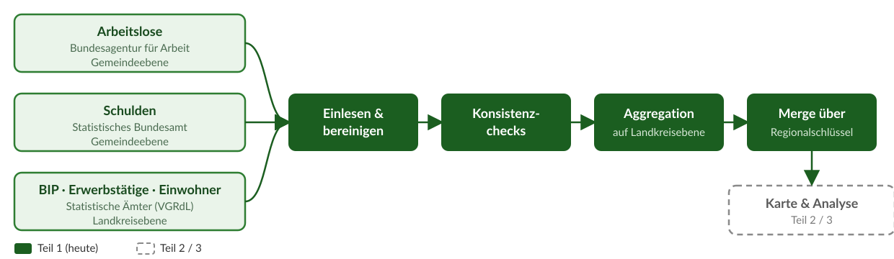
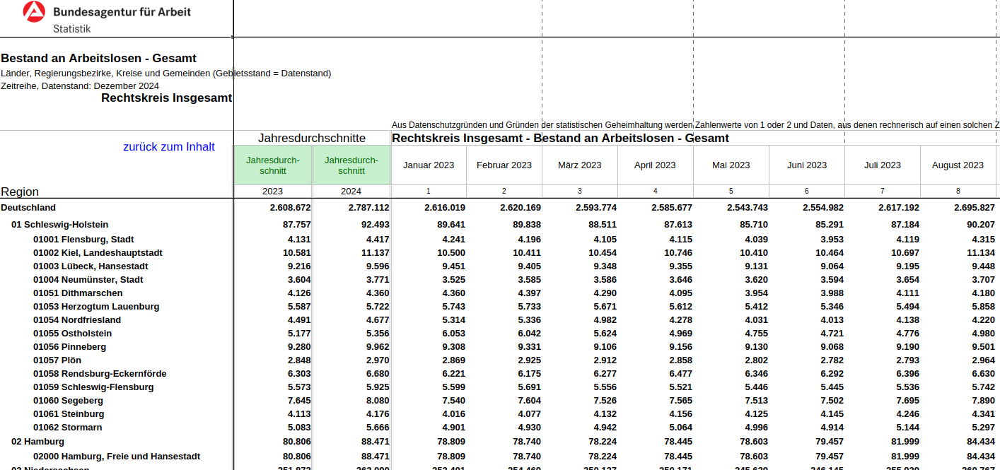
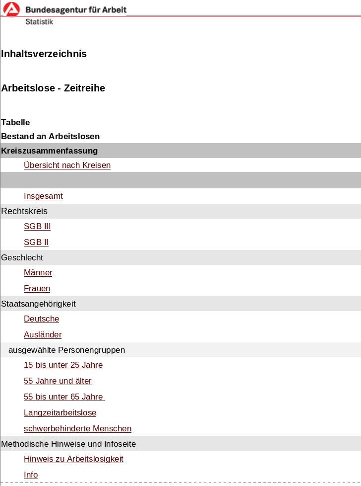
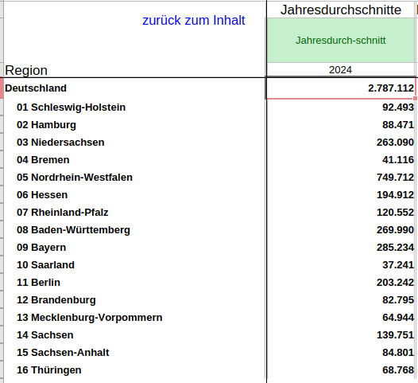
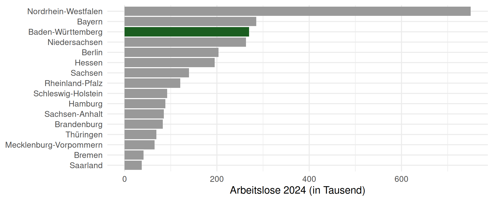
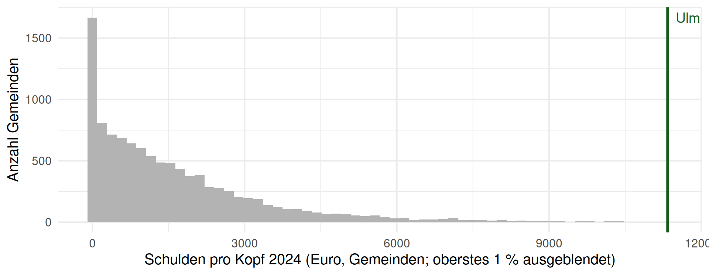
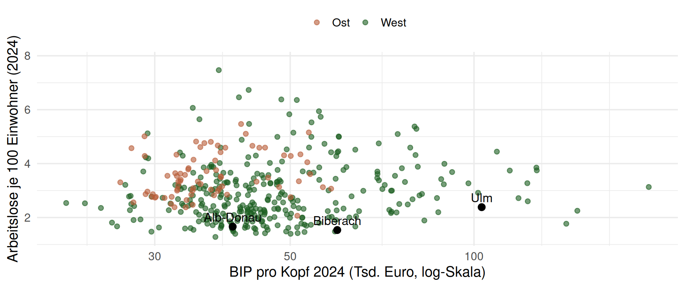

Case-Study zur Arbeitslosigkeit in Deutschland
Teil 1: Daten beschaffen, bereinigen, prüfen
Worum geht es?
Ziel der Case-Study
Deutschland hat europaweit eine der niedrigsten Arbeitslosenquoten:

Quelle: Eurostat, Arbeitslosenquote nach Ländern (une_rt_a), Jahresdurchschnitt 2024, 15–74 Jahre. Datenstand 10.09.2026.
Doch gilt dies für alle Regionen in Deutschland?
Warum ist die Arbeitslosenquote in manchen Regionen höher als in anderen?
Dem gehen wir in dieser Case-Study auf den Grund.
Schätzfrage zum Einstieg
30 Sekunden, Handzeichen:
- Welches Bundesland hat die höchste Arbeitslosenquote?
- Welches die niedrigste?
- Wo liegt Baden-Württemberg?
Auflösung am Ende des Abschnitts zu den Arbeitslosendaten.
Wo wollen wir hin?
Am Ende steht eine Karte: Arbeitslosigkeit, Verschuldung und Wirtschaftskraft pro Landkreis. Dafür bauen wir eine Daten-Pipeline:

Teil 1 = alles Grüne. Unspektakulär, aber hier passieren 80 % der Fehler in echten Projekten.
Ziele der Case-Study
Die Case-Study besteht aus mehreren Teilen und begleitet die komplette Vorlesung als konkretes Anschauungsobjekt. Sie dient als
- konkretes und umfangreiches Beispiel für ein Projekt,
- Quelle ökonomischer und geographischer Kenntnisse über Deutschland,
- Beispiel, wie Statistik und Programmierung in der empirischen Arbeit zusammenspielen.
Das eigentliche Lernziel von Teil 1
Sie sollen Code lesen, prüfen und reparieren können, egal ob er von Ihnen, von Kommiliton:innen oder von Chat AI stammt. Deshalb gibt es regelmäßig 🐛 Bug Hunts: Code, der läuft, aber falsch ist.
Drei Arten von Fehlern
| Was passiert? | Wie merkt man es? | Gefahr | |
|---|---|---|---|
Fehler (Error) |
Code stoppt | sofort | gering |
Warnung (Warning) |
Code läuft weiter | nur wenn man liest | mittel |
| Stiller Fehler | Code läuft, Ergebnis falsch | nur durch Prüfen | hoch |
KI-generierter Code produziert fast nie Fehler der ersten Art, aber regelmäßig der dritten. Alle Bug Hunts heute sind stille Fehler.
Was wir dagegen setzen ist der Review-Loop: Verdacht → Prüfung (nrow(), glimpse(), count(), externe Quelle) → Fix.
So läuft die Vorlesung
🔮 Prognose: Sie tippen, bevor der Output kommt (Handzeichen).
🐛 Bug Hunt: KI-Code, der läuft, aber falsch ist. 1–2 Minuten zu zweit.
✍️ Jetzt Sie: kurze Programmieraufgabe im eigenen RStudio.
📱 Kahoot-Checkpoint: am Ende jedes Abschnitts, 6–7 Fragen, 5 Minuten. Die Bug Hunts kommen dort wieder vor.
Halten Sie kahoot.it auf dem Handy bereit; die PIN steht jeweils auf der Folie.
Bei den Kahoot-Quizzes gibt es immer etwas zu gewinnen.
Zwei Umgebungen zum Coden
Direkt auf der Folie (webR)
Code-Felder mit Run Code laufen in Ihrem Browser; nichts installieren, nichts hochladen. Für die kurzen ✍️-Aufgaben und die Bug-Hunt-Fixes.
- Hinweise und Lösung lassen sich aufklappen
- Ein automatischer Check sagt Ihnen, ob es stimmt
- Beim ersten Öffnen lädt webR ca. 20 Sekunden
Probieren Sie es gleich aus:
In RStudio (Ihr Rechner oder Posit Cloud)
Für die 20-Minuten-Aufgaben mit den vollständigen Excel-Dateien aus dem Repository, so, wie Sie später auch im Projekt arbeiten.
- GitHub Desktop → Pull →
case-study/öffnen - Chat AI erlaubt, Prüfen Pflicht
Die Felder auf den Folien speichern nichts. Was Sie behalten wollen, kopieren Sie in Ihr eigenes R-Skript.
Datensätze beschaffen
Teil 1 im Überblick
- Daten einlesen
- Daten bereinigen und in eine geeignete Form bringen (
tidy) - Daten prüfen (intern und gegen externe Quellen)
Anwenden auf
- Daten zur Arbeitslosenstatistik
- Daten zur Verschuldung einzelner Landkreise bzw. Gemeinden
- Daten zum BIP
Wir nutzen die Base-R-Pipe |>. Wenn Chat AI Ihnen %>% liefert: funktioniert genauso.
Wichtig für die Datenbeschaffung
- Zuverlässige, qualitativ hochwertige Datenquellen finden (Beispiel: Warum man BIP-Daten diktatorisch regierter Staaten nicht trauen kann)
- Automatisierten Download programmieren
- Einlesen, verarbeiten und zusammenführen verschiedener Datensätze in R
Verbindung zum 2. RTutor Problem Set:
- Im Problem Set: Kennzahlen zu verschiedenen Ländern der EU
- Hier: Kennzahlen innerhalb Deutschlands
In Case-Study und Problem Sets treffen Sie auf konkrete Probleme, die Sie mit Ihren Kenntnissen aus der Vorlesung lösen sollen.
Daten beschaffen
Woher beziehen wir unsere Informationen?
- Verschuldung der Gemeinden: Statistisches Bundesamt, Integrierte Schulden der Gemeinden und Gemeindeverbände
- Arbeitslosigkeit auf Verwaltungsgemeinschaftsebene: Bundesagentur für Arbeit
- BIP auf Landkreisebene: Statistische Ämter des Bundes und der Länder
Zuverlässige und qualitativ hochwertige Datenquellen ausfindig machen ✔
Daten herunterladen
- Daten können von URLs mit
readxlundreadrdirekt eingelesen werden - Allerdings: Wenn die URL nicht mehr verfügbar ist, was dann?
- Daten immer mit
download.file()herunterladen und indata/abspeichern!
- Daten immer mit
Automatisierten Download programmieren (in der ausformulierten Case-Study) ✔
Die Daten liegen bereits im GitHub-Repository “case-study-germany”. Klonen Sie dieses Repository auf Ihren PC!
Klonen Sie unsere GitHub-Seite
- GitHub-Seite des Projektkurses → grüner “Code”-Button
- HTTPS-URL kopieren
- GitHub Desktop → “Clone a repository” → “URL” → einfügen
Zu Beginn jeder Woche in GitHub Desktop auf “Pull” klicken: Folien, Case-Study und Tutorials werden automatisch aktualisiert.
Nötige Pakete laden
── Attaching core tidyverse packages ─────────────────────────────────────── tidyverse 2.0.0 ──
✔ dplyr 1.2.1 ✔ readr 2.2.0
✔ forcats 1.0.1 ✔ stringr 1.6.0
✔ ggplot2 4.0.3 ✔ tibble 3.3.1
✔ lubridate 1.9.5 ✔ tidyr 1.3.2
✔ purrr 1.2.2
── Conflicts ───────────────────────────────────────────────────────── tidyverse_conflicts() ──
✖ dplyr::filter() masks stats::filter()
✖ dplyr::lag() masks stats::lag()
ℹ Use the conflicted package (<http://conflicted.r-lib.org/>) to force all conflicts to become errors🔮 Prognose: Nach library(tidyverse) rufen Sie filter() auf – welche Funktion wird genommen? Warum steht das hier?
Arbeitslose
Arbeitslose → Schulden → BIP → Merge → Karte
Nach diesem Abschnitt können Sie …
- eine unschöne Excel-Tabelle gezielt einlesen (
sheet,skip), - mit
str_extract()/str_remove()Informationen aus Text ziehen, - Daten intern und gegen eine externe Quelle auf Konsistenz prüfen.
Bevor wir Code schreiben: die Rohdaten
3 Minuten, zu zweit: Öffnen Sie im geklonten Repository case-study/data/Arbeitslose_2024.xlsx.zip (Blatt “Gesamt”). Notieren Sie drei Dinge, die das Einlesen in R erschweren werden.

Daten einlesen
Unterschiedliche Dateien und Tabellenblätter – was verwenden wir?
Zuerst legen wir den Pfad zum Datenordner fest. Im RStudio-Projekt case-study/ liegen die Rohdaten im Unterordner data/:
Vermutung: Über das Tabellenblatt “Inhaltsverzeichnis” werden wir schlauer.
Daten einlesen

Alternative: Excel-Datei in Excel/LibreOffice öffnen und dann entscheiden, welches Blatt Sie einlesen.
Welche Information brauchen wir?
- Die Anzahl aller Arbeitslosen pro Gemeinde (SGB II und III) aus dem Jahr 2024
- … pro Gemeinde für einen bestimmten Rechtskreis (z.B. nur SGB II)
- … pro Gemeinde für Rechtskreis und Alter (z.B. SGB II, unter 25)
Was ist hier eine Beobachtung?
Dazu brauchen wir noch Regionalschlüssel und Gemeindenamen.
- Einfachster Weg: die ersten acht Zeilen abschneiden (
skip = 8) … - … und nur die ersten 3 Spalten behalten.
Einlesen und bereinigen
🔮 Prognose: Wie viele Zeilen hat alo_skip – mehr oder weniger als die ca. 10.800 Gemeinden in Deutschland?
alo_skip <- read_xlsx(alo_name, sheet = "Gesamt", skip = 8)
data_alo <- alo_skip |>
select(c(`...1`, Jahresdurchschnitte, `...3`)) |> # nur die ersten 3 Spalten
mutate(Regionalschluessel = str_extract(`...1`, "[[:digit:]]+"),
Gemeinde = str_extract(`...1`, "[A-Z].*")) |>
mutate(alo = as.numeric(`...3`)) |> # Arbeitslose als Zahl
select(-c(`...1`, Jahresdurchschnitte, `...3`)) |>
filter(!is.na(alo)) # Leer- und Textzeilen rausSchritt für Schritt durch die Pipe
Klicken Sie sich durch die Reiter – nach jedem |> sehen Sie, was mit den Daten passiert:
Von den 27 eingelesenen Spalten nur die drei relevanten behalten:
# A tibble: 4 × 3
...1 Jahresdurchschnitte ...3
<chr> <chr> <chr>
1 <NA> Jahresdurch-schnitt Jahresdurch-schnitt
2 Region 2023 2024
3 Deutschland 2608671.5 2787112.0833333335
4 01 Schleswig-Holstein 87757.333333333328 92492.916666666672 ...1 enthält Schlüssel und Name – wir ziehen beides in eigene Spalten:
alo_skip |>
select(c(`...1`, Jahresdurchschnitte, `...3`)) |>
mutate(Regionalschluessel = str_extract(`...1`, "[[:digit:]]+"),
Gemeinde = str_extract(`...1`, "[A-Z].*")) |>
head(4)# A tibble: 4 × 5
...1 Jahresdurchschnitte ...3 Regionalschluessel Gemeinde
<chr> <chr> <chr> <chr> <chr>
1 <NA> Jahresdurch-schnitt Jahresdurch-schnitt <NA> <NA>
2 Region 2023 2024 <NA> Region
3 Deutschland 2608671.5 2787112.0833333335 <NA> Deutschland
4 01 Schleswig-Holstein 87757.333333333328 92492.916666666672 01 Schleswig-H…...3 ist Text – als Zahl alo umwandeln (Kopfzeilen werden dabei zu NA):
alo_skip |>
select(c(`...1`, Jahresdurchschnitte, `...3`)) |>
mutate(Regionalschluessel = str_extract(`...1`, "[[:digit:]]+"),
Gemeinde = str_extract(`...1`, "[A-Z].*")) |>
mutate(alo = as.numeric(`...3`)) |>
head(4)# A tibble: 4 × 6
...1 Jahresdurchschnitte ...3 Regionalschl…¹ Gemeinde alo
<chr> <chr> <chr> <chr> <chr> <dbl>
1 <NA> Jahresdurch-schnitt Jahresdurch-schnitt <NA> <NA> NA
2 Region 2023 2024 <NA> Region 2.02e3
3 Deutschland 2608671.5 2787112.0833333335 <NA> Deutsch… 2.79e6
4 01 Schleswig-Holstein 87757.333333333328 92492.916666666672 01 Schlesw… 9.25e4
# ℹ abbreviated name: ¹RegionalschluesselHilfsspalten entfernen und NA-Zeilen (Kopf-/Leerzeilen) herausfiltern → fertig:
alo_skip |>
select(c(`...1`, Jahresdurchschnitte, `...3`)) |>
mutate(Regionalschluessel = str_extract(`...1`, "[[:digit:]]+"),
Gemeinde = str_extract(`...1`, "[A-Z].*")) |>
mutate(alo = as.numeric(`...3`)) |>
select(-c(`...1`, Jahresdurchschnitte, `...3`)) |>
filter(!is.na(alo)) |>
head(4)# A tibble: 4 × 3
Regionalschluessel Gemeinde alo
<chr> <chr> <dbl>
1 <NA> Region 2024
2 <NA> Deutschland 2787112.
3 01 Schleswig-Holstein 92493.
4 01001 Flensburg, Stadt 4416.Einlesen und bereinigen: Ergebnis
🐛 Bug Hunt 1: Läuft, aber …
Der Code von eben läuft ohne Fehler und ohne Warnung. Trotzdem steckt ein stiller Fehler in dieser Zeile:
2 Minuten, zu zweit: Welche Gemeindenamen werden falsch extrahiert? Wie würden Sie das prüfen, ohne 10.000 Zeilen anzuschauen?
🐛 Bug Hunt 1: Prüfung
Gezielt nach Randfällen suchen (Namen, die mit Umlaut beginnen) und Rohdaten mit Ergebnis vergleichen:
alo_skip |>
filter(str_detect(`...1`, "^[[:digit:]]+\\s+[ÄÖÜ]")) |>
transmute(roh = `...1`, Gemeinde = str_extract(`...1`, "[A-Z].*"))# A tibble: 22 × 2
roh Gemeinde
<chr> <chr>
1 05370028 Übach-Palenberg, Stadt Palenberg, Stadt
2 07132087 Ölsen <NA>
3 07143060 Ötzingen <NA>
4 07231125 Ürzig <NA>
# ℹ 18 more rowsWarum? [A-Z] erfasst nur A bis Z – keine Umlaute. Bei “Überlingen, Stadt” springt die Regex zum ersten “echten” Großbuchstaben: “Stadt”.
✍️ Jetzt Sie: Bug Hunt 1 reparieren
alo_roh enthält 40 Zeilen der Rohspalte (roh), darunter die Umlaut-Fälle. Ersetzen Sie die Regex so, dass Gemeinde immer der ganze Name ist. Die letzte Zeile soll das Ergebnis ausgeben.
Hinweis 1
Statt zu beschreiben, was Sie behalten wollen, entfernen Sie, was Sie nicht wollen: Ziffern und Leerzeichen am Anfang. str_remove() hilft.
Hinweis 2
Das Muster für “Ziffern am Anfang, danach Leerzeichen”: "^[[:digit:]]+\\s*"
🐛 Bug Hunt 1: Fix
Nicht beschreiben, was wir wollen, sondern entfernen, was wir nicht wollen (Ziffern und Leerzeichen am Anfang):
data_alo <- alo_skip |>
mutate(Gemeinde = str_remove(`...1`, "^[[:digit:]]+\\s*"),
Regionalschluessel = str_extract(`...1`, "[[:digit:]]+"),
alo = as.numeric(`...3`)) |>
select(Regionalschluessel, Gemeinde, alo) |>
filter(!is.na(alo))
data_alo <- data_alo[-c(1, 2), ]
data_alo |> filter(str_detect(Gemeinde, "^[ÄÖÜ]")) |> head(3)# A tibble: 3 × 3
Regionalschluessel Gemeinde alo
<chr> <chr> <dbl>
1 05370028 Übach-Palenberg, Stadt 1024
2 07132087 Ölsen 2.58
3 07143060 Ötzingen 26.6 Eine Regex, die auf den ersten fünf Zeilen funktioniert, ist noch nicht getestet. Suchen Sie die Randfälle: Umlaute, Bindestriche, Sonderzeichen.
Konsistenzcheck
- Machen die Angaben Sinn, sind die Daten in sich konsistent?
- Externe Datenquelle suchen und intern auf Konsistenz prüfen
- Informationen aggregieren und mit anderen Quellen vergleichen
- Zunächst: Arbeitslose je Bundesland 2024 → zweistelliger
Regionalschluessel- Zeichen zählen mit
nchar()(number of characters)
- Zeichen zählen mit
- Externe Quelle: Arbeitslose 2024 nach Ländern (Arbeitsagentur), Tabellenblatt 8
🔮 Prognose: Wie viele Zeilen liefert filter(nchar(Regionalschluessel) == 2)?
Konsistenzcheck: externe Quelle
check_alo_bundesland <- data_alo |>
filter(nchar(Regionalschluessel) == 2) |>
rename(bundesland = Regionalschluessel)
nrow(check_alo_bundesland)[1] 16Wette (Handzeichen): Stimmen unsere 16 Zahlen mit der Tabelle der Arbeitsagentur überein? (a) exakt (b) kleine Abweichungen (c) große Abweichungen
Konsistenzcheck: externe Quelle
# A tibble: 16 × 3
bundesland Gemeinde alo
<chr> <chr> <dbl>
1 01 Schleswig-Holstein 92493.
2 02 Hamburg 88471.
3 03 Niedersachsen 263090.
4 04 Bremen 41116.
5 05 Nordrhein-Westfalen 749712.
6 06 Hessen 194912.
7 07 Rheinland-Pfalz 120552.
8 08 Baden-Württemberg 269990
9 09 Bayern 285234.
10 10 Saarland 37241.
11 11 Berlin 203242
12 12 Brandenburg 82795.
13 13 Mecklenburg-Vorpommern 64944.
14 14 Sachsen 139751.
15 15 Sachsen-Anhalt 84801.
16 16 Thüringen 68768.
Beide Datenreihen sind identisch.
Interne Konsistenz prüfen
Berechne: Arbeitslose je Bundesland als Summe über die Gemeinden – und vergleiche mit der Arbeitsagentur.
# Nur Gemeinden (8-stelliger Schlüssel), dann Landkreis und Bundesland ableiten
alo_meta <- data_alo |>
filter(nchar(Regionalschluessel) == 8) |>
mutate(landkreis = str_extract(Regionalschluessel, "^.{5}"),
bundesland = str_extract(Regionalschluessel, "^.{2}"))
alo_bundesland <- alo_meta |>
group_by(bundesland) |>
summarise(total_alo = sum(alo))
alo_landkreis <- alo_meta |>
group_by(landkreis) |>
summarise(total_alo = sum(alo)) |>
rename(Regionalschluessel = landkreis)Interne Konsistenz prüfen
check_alo_bundesland: von der Arbeitsagentur bereits aggregiertalo_bundesland: unsere Summe aus den Gemeinden
check_consistency <- left_join(check_alo_bundesland, alo_bundesland, by = "bundesland") |>
mutate(diff = alo - total_alo)
summary(check_consistency$diff) Min. 1st Qu. Median Mean 3rd Qu. Max.
-7.276e-12 0.000e+00 0.000e+00 -4.547e-13 0.000e+00 0.000e+00 Es bestehen keine Unstimmigkeiten.
🐛 Bug Hunt 2: Die KI-Variante
Chat AI schlägt für denselben Schritt vor:
2 Minuten: Läuft fehlerfrei. In welcher Zeile steckt der Fehler?
🐛 Bug Hunt 2: Prüfung
data_alo |>
filter(nchar(Regionalschluessel) >= 5) |>
mutate(bundesland = str_sub(Regionalschluessel, 1, 2)) |>
group_by(bundesland) |>
summarise(total_alo = sum(alo)) |>
left_join(check_alo_bundesland, by = "bundesland") |>
mutate(faktor = total_alo / alo)# A tibble: 16 × 5
bundesland total_alo Gemeinde alo faktor
<chr> <dbl> <chr> <dbl> <dbl>
1 01 184986. Schleswig-Holstein 92493. 2
2 02 176943. Hamburg 88471. 2
3 03 526179. Niedersachsen 263090. 2
4 04 82231. Bremen 41116. 2
# ℹ 12 more rowsDoppelzählung: Landkreise (5 Stellen) und ihre Gemeinden (8 Stellen) werden addiert. Der Check gegen die externe Quelle findet das sofort – deshalb machen wir ihn.
✍️ Jetzt Sie: Bug Hunt 2 reparieren
Reparieren Sie den KI-Code so, dass diff für alle 16 Bundesländer 0 ist. data_alo und check_alo_bundesland sind geladen.
Hinweis
Welche Schlüssellänge haben nur Gemeinden? Bundesländer haben 2, Landkreise 5 Stellen.
Lösung
filter(nchar(Regionalschluessel) == 8) – nur Gemeinden summieren, keine Aggregate.
Erster Blick auf die Daten

NRW führt klar. Beantwortet das unsere Schätzfrage? Was fehlt, um Regionen fair zu vergleichen?
📱 Kahoot-Checkpoint 1: Arbeitslose

kahoot.it · PIN am Beamer
7 Fragen, 5 Minuten.
read_xlsx(),skip,nchar()- Regionalschlüssel: 2 / 5 / 8 Stellen
- Bug Hunt 1: Umlaute und
[A-Z] - Bug Hunt 2: Doppelzählung
- Stille Fehler erkennen
Pro-Kopf-Verschuldung
Arbeitslose ✔ → Schulden → BIP → Merge → Karte
Nach diesem Abschnitt können Sie …
- viele gleich aufgebaute Tabellenblätter mit
map()einlesen, - Zahlen, die als Text gespeichert sind (
"{15 653}"), sauber umwandeln, - erklären, warum ein Mittelwert von Pro-Kopf-Werten meistens falsch ist.
Schätzfrage: Ihr Landkreis
Schätzen Sie (notieren!): Kommunale Schulden pro Kopf in
- der Stadt Ulm?
- dem Alb-Donau-Kreis?
- dem Landkreis Biberach?
Ist Ulm stärker oder schwächer verschuldet als der Durchschnitt aller Gemeinden?
Auflösung am Ende des Abschnitts.
Pro-Kopf-Verschuldung auf Gemeindeebene
- Gemeindeebene, Jahr 2024, Querschnittsdaten
- Vom Statistischen Bundesamt direkt als Excel-Tabelle heruntergeladen ✔
Welche Tabellenblätter sollten wir nutzen?
[1] "Titel" "Impressum" "Inhalt" "Abkürzungen"
[5] "Erläuterungen" "Übersicht" "SH" "NI"
[9] "NW" "HE" "RP" "BW"
[13] "BY" "SL" "BB" "MV"
[17] "SN" "ST" "TH" "Statistische Ämter"Mehrere Tabellenblätter einlesen
- Nicht alle Informationen stehen in einem Tabellenblatt
- ein Blatt je Bundesland
- dieselbe Operation muss über mehrere Blätter laufen
Zuerst an einem Beispiel schauen, welche Informationen wir benötigen:
# A tibble: 8 × 21
Zurück zum In…¹ ...2 ...3 ...4 ...5 ...6 ...7 ...8 ...9 ...10 ...11 ...12 ...13 ...14
<chr> <chr> <chr> <chr> <chr> <chr> <chr> <chr> <chr> <chr> <chr> <chr> <chr> <chr>
1 <NA> <NA> <NA> <NA> <NA> <NA> <NA> <NA> <NA> <NA> <NA> <NA> <NA> <NA>
2 <NA> <NA> <NA> <NA> <NA> <NA> <NA> <NA> <NA> <NA> <NA> <NA> <NA> <NA>
3 Tabelle 1: … <NA> <NA> <NA> <NA> <NA> <NA> <NA> <NA> <NA> <NA> <NA> <NA> <NA>
4 nach Höhe der … <NA> <NA> <NA> <NA> <NA> <NA> <NA> <NA> <NA> <NA> <NA> <NA> <NA>
# ℹ 4 more rows
# ℹ abbreviated name: ¹`Zurück zum Inhalt...1`
# ℹ 7 more variables: ...15 <chr>, ...16 <chr>, ...17 <chr>, ...18 <chr>, ...19 <chr>,
# `Zurück zum Inhalt...20` <chr>, ...21 <chr>Was wir brauchen
- Regionalschlüssel, Gemeindename
- Einwohner
- Schulden des öffentlichen Bereichs insgesamt
- Schulden je Einwohner
Variablenbezeichnungen beginnen in Zeile 5 – die ersten Zeilen überspringen wir.
Was ist hier eine Beobachtung?
Ein Tabellenblatt als Vorlage
# Blatt "SH" ohne die ersten 5 Zeilen, nur Spalten 1-7
schulden_sh <- read_xlsx(schulden_pfad, sheet = "SH", skip = 5)[1:7]
# Spalten umbenennen
colnames(schulden_sh) <- c("Regionalschluessel", "Gemeinde", "Verwaltungsform",
"Einwohner", "Schulden_gesamt", "Veraenderung_Vorjahr", "Schulden_pro_kopf")
# Merken, aus welchem Blatt die Daten kommen
schulden_sh$Bundesland <- "SH"# A tibble: 4 × 8
Regionalschluessel Gemeinde Verwaltun…¹ Einwohner Schulden…² Veraende…³ Schulden…⁴ Bundesland
<chr> <chr> <chr> <chr> <chr> <chr> <chr> <chr>
1 <NA> <NA> <NA> <NA> <NA> <NA> <NA> SH
2 <NA> <NA> <NA> <NA> <NA> <NA> <NA> SH
3 <NA> <NA> <NA> <NA> <NA> <NA> <NA> SH
4 <NA> <NA> <NA> <NA> Euro % Euro SH
# ℹ abbreviated names: ¹Verwaltungsform, ²Schulden_gesamt, ³Veraenderung_Vorjahr,
# ⁴Schulden_pro_kopf✍️ Jetzt Sie: alle Bundesländer
Teams von zwei Personen, 20 Minuten: Code, der alle Bundesländer einliest und zu einem Datensatz zusammenfügt. Nutzen Sie Chat AI und posten Sie ihren Code hier (am Besten vorher prüfen):
nrow()– plausibel für ~11.000 Gemeinden?count(Bundesland)– sind alle 13 Blätter drin?glimpse()– welche Spalten sind<chr>, obwohl sie Zahlen enthalten?
Posten Sie Ihren Code hier →
🐛 Bug Hunt 3: Eine typische KI-Antwort
1 Minute: Läuft ohne Fehler. Welche Zeile? Was steht am Ende in schulden_individuell?
Zeile 7 überschreibt in jedem Durchlauf und am Ende ist nur Thüringen übrig. count(Bundesland) zeigt eine einzige Zeile.
Lösung: map() statt Schleife
sheet_names <- excel_sheets(schulden_pfad)
sheet_read <- sheet_names[7:19] # Blätter 7-19: die Bundesländer
spalten <- c("Regionalschluessel", "Gemeinde", "Verwaltungsform",
"Einwohner", "Schulden_gesamt", "Veraenderung_Vorjahr", "Schulden_pro_kopf")
schulden_individuell <- sheet_read |>
set_names() |> # Namen = Blattnamen
map(\(s) read_xlsx(schulden_pfad, sheet = s, skip = 5)[1:7] |> set_names(spalten)) |>
list_rbind(names_to = "Bundesland") # zu einem DatensatzVariablen umformen
# A tibble: 4 × 8
Bundesland Regionalschluessel Gemeinde Verwaltun…¹ Einwohner Schulden…² Veraende…³ Schulden…⁴
<chr> <chr> <chr> <chr> <chr> <chr> <chr> <chr>
1 SH <NA> <NA> <NA> <NA> <NA> <NA> <NA>
2 SH <NA> <NA> <NA> <NA> <NA> <NA> <NA>
3 SH <NA> <NA> <NA> <NA> <NA> <NA> <NA>
4 SH <NA> <NA> <NA> <NA> Euro % Euro
# ℹ abbreviated names: ¹Verwaltungsform, ²Schulden_gesamt, ³Veraenderung_Vorjahr,
# ⁴Schulden_pro_kopfEs gibt noch Probleme:
- Die Werte stehen nicht direkt unter den Variablennamen →
NAim Regionalschlüssel entfernen - “Einwohner”, “Schulden_gesamt”, “Schulden_pro_kopf” sind
character(<chr>)
Warum character?
# A tibble: 1 × 3
Gemeinde Einwohner Schulden_gesamt
<chr> <chr> <chr>
1 Amt Burg-St. Michaelisdonn {15 594} {44 481 073} 🔮 Prognose: Was liefert as.numeric("{15 653}")? Und as.numeric("15 653")?
Eine Warnung, keine Fehlermeldung. Der Code läuft weiter, aber mit “NA” statt Zahlen. Daher ist es wichtig Warnungen nicht zu ignorieren, sondern diesen nachzugehen.
Variablen umformen
# Hilfsfunktion: Klammern und Leerzeichen entfernen, dann in Zahl umwandeln
zahl <- function(x) as.numeric(gsub("[[:space:]{}]", "", x))
schulden_bereinigt <- schulden_individuell |>
filter(!is.na(Regionalschluessel)) |>
mutate(across(c(Einwohner, Schulden_gesamt, Schulden_pro_kopf), zahl)) |>
filter(nchar(Regionalschluessel) == 12) |> # nur echte Gemeinden – Landkreis-, Verwaltungs- und Summenzeilen raus!
mutate(landkreis = str_extract(Regionalschluessel, "^.{5}")) |>
select(-Veraenderung_Vorjahr) |>
filter(!is.na(Einwohner)) # manche Einheiten haben keine EinwohnerangabeRows: 10,750
Columns: 8
$ Bundesland <chr> "SH", "SH", "SH", "SH", "SH", "SH", "SH", "SH", "SH", "SH", "SH", …
$ Regionalschluessel <chr> "010010000000", "010020000000", "010030000000", "010040000000", "0…
$ Gemeinde <chr> "Flensburg, Stadt", "Kiel, Landeshauptstadt", "Lübeck, Hansestadt"…
$ Verwaltungsform <chr> "kreisfreie Stadt", "kreisfreie Stadt", "kreisfreie Stadt", "kreis…
$ Einwohner <dbl> 96081, 252175, 217067, 79640, 12747, 22046, 597, 190, 985, 4057, 6…
$ Schulden_gesamt <dbl> 475045842, 1302633735, 1323857542, 464688174, 71926757, 65851082, …
$ Schulden_pro_kopf <dbl> 4944.22, 5165.59, 6098.84, 5834.86, 5642.64, 2986.99, 3411.50, 848…
$ landkreis <chr> "01001", "01002", "01003", "01004", "01051", "01051", "01051", "01…Reguläre Ausdrücke
Was machen gsub("[[:space:]{}]", "", x) und str_extract(x, "^.{5}") hier genau?
| Muster | Bedeutung |
|---|---|
[[:space:]] |
ein Leerzeichen (oder Tab) |
[{}] |
eine geschweifte Klammer |
[[:space:]{}] |
eines von beidem |
^.{5} |
die ersten fünf beliebigen Zeichen |
^[[:digit:]]+\\s* |
Ziffern am Anfang, dann optionale Leerzeichen |
Lassen Sie ihre Regex von Chat AI schreiben, aber achten Sie in der Prüfung auf die Randfälle (Bug Hunt 1).
Interne Validität: Schulden pro Kopf
Das Statistische Bundesamt liefert “Schulden je Einwohner” fertig. Wir rechnen nach:
Wette: Stimmt Schulden_gesamt / Einwohner mit der gelieferten Spalte überein? (a) exakt (b) bis auf Rundung (c) echte Abweichungen
[1] 0.00 0.01bis auf 1 Cent, d.h. die Daten sind intern konsistent.
Auflösung: Ihr Landkreis
schulden_bereinigt |>
filter(str_detect(Gemeinde, "Ulm, Stadtkreis|Biberach an der Riß")) |>
select(Gemeinde, Einwohner, Schulden_pro_kopf)# A tibble: 2 × 3
Gemeinde Einwohner Schulden_pro_kopf
<chr> <dbl> <dbl>
1 Stadt Ulm, Stadtkreis 129317 11334.
2 Große Kreisstadt Biberach an der Riß 34515 932.Jetzt Sie: Suchen Sie Ihre Gemeinde – Suchbegriff unten ersetzen, dann Run Code (Teil des Namens genügt):
Auflösung: Ulm im Vergleich

Wer lag mit seiner Schätzung richtig? Was überrascht Sie an der Verteilung?
📱 Kahoot-Checkpoint 2: Schulden

kahoot.it · PIN am Beamer
6 Fragen, 4 Minuten
as.numeric("{15 653}")– Warnung oder Fehler?glimpse()undgsub()- Bug Hunt 3: die Schleife
- Pro-Kopf-Werte richtig aggregieren (Vorgriff!)
map()+list_rbind()
Bruttoinlandsprodukt
Arbeitslose ✔ → Schulden ✔ → BIP → Merge → Karte
Nach diesem Abschnitt können Sie …
- eine Fehlermeldung von
pivot_longer()lesen und die Ursache finden, - Daten vom
wide- inslong-Format bringen, - wiederholten Code durch eine Funktion ersetzen.
Informationen zum Bruttoinlandsprodukt
Nach dem Download bei den Statistischen Ämtern interessieren uns:
- Blatt “1.1”: BIP · Blatt “3.1”: Erwerbstätige · Blatt “5”: Einwohner
Außerdem:
- Die ersten vier Zeilen benötigen wir nicht
- Die letzte Zeile ist eine Beschreibung → nur Zeilen behalten, deren
Lfd. Nr.numerisch ist - Nicht benötigt:
Lfd. Nr.,EU-Code,NUTS 1–NUTS 3,Land,Gebietseinheit
Einlesen
Panel im wide-Format
# A tibble: 3 × 8
Regionalschluessel `1992` `1994` `1995` `1996` `1997` `1998` `1999`
<chr> <chr> <chr> <chr> <chr> <chr> <chr> <chr>
1 08 256667.12100000001 263604.43400000001 272286.… 27777… 28379… 29287… 30357…
2 081 110814.31200000001 111487.84299999999 114967.… 11666… 12100… 12407… 12845…
3 08111 32842.553999999996 31662.357 32145.6… 32708… 34313… 33567… 35069…Der Datensatz
- ist ein Panel: mehrere Jahre für mehrere Landkreise,
- liegt im
wide-Format vor → nichttidy.
Was ist hier eine Beobachtung? Welche tidy-Bedingung verletzt bip_wide?
Dreimal dasselbe? Dann eine Funktion
Für Erwerbstätige und Einwohner wäre der Code identisch. Dreimal kopieren ist das, was Chat AI gerne tut – und ein Warnsignal:
bereinige_vgr <- function(df) {
df |>
filter(!is.na(suppressWarnings(as.numeric(`Lfd. Nr.`)))) |>
select(-c(`Lfd. Nr.`, `EU-Code`, `NUTS 1`, `NUTS 2`, `NUTS 3`, Land, Gebietseinheit)) |>
rename(Regionalschluessel = `Regional-schlüssel`)
}
erwerb_wide <- bereinige_vgr(erwerb)
einwohner_wide <- bereinige_vgr(einwohner)Einen Fehler dann nur einmal beheben. Fragen Sie Chat AI ruhig: “Fasse die drei identischen Blöcke in eine Funktion zusammen.”
Fehlermeldungen lesen
Error in `pivot_longer()`:
! Can't combine `1992` <character> and `2000` <double>.1 Minute, zu zweit: Lesen Sie die Meldung Wort für Wort. Was sagt sie? Welcher eine Befehl bestätigt Ihre Vermutung?
Fehlermeldungen lesen: Prüfung
1992 1999 2000 2024
"character" "character" "numeric" "numeric" 1992–1999 sind character, ab 2000 double. pivot_longer() kann die Spalten nicht in eine Wertespalte stapeln. → Erst umwandeln.
tidyverse-Fehlermeldungen nennen fast immer die betroffenen Spalten und die Klassen. Lesen, nicht raten.
Umwandeln – und die Warnung ernst nehmen
Warning: There were 7 warnings in `mutate()`.
The first warning was:
ℹ In argument: `across(`1992`:`1999`, as.numeric)`.
Caused by warning:
! NAs durch Umwandlung erzeugt
ℹ Run `dplyr::last_dplyr_warnings()` to see the 6 remaining warnings.[1] 444Es wird gewarnt, dass NAs erzeugt wurden. Warum? Welche Werte sind betroffen?
Betroffen sind Zellen mit - (kein Wert). Ein NA ist hier inhaltlich richtig, nach dem Check können wir diese Zeilen umwandeln.
Umwandeln
suppressWarnings() erst, nachdem wir wissen, was die Warnung bedeutet, ansonsten hätten wir diesen Fehler nie entdeckt.
Ins long-Format
- Einwohner und Erwerbstätige in 1.000 Personen → × 1.000
- BIP in Mio. Euro → × 1.000.000
✍️ Jetzt Sie: Einwohner ins long-Format
3 Minuten: Bringen Sie einwohner_wide analog zu bip_long ins long-Format: Spalten Regionalschluessel, Jahr (numerisch), einwohner (in Personen, nicht in Tausend!). Letzte Zeile: das Ergebnis.
Hinweis
Alle Jahresspalten auswählen: matches("^[0-9]{4}$"). Einwohner sind in 1.000 Personen angegeben.
Lösung als Funktion
Dasselbe für Erwerbstätige, also wieder eine Funktion statt Copy & Paste:
ins_long <- function(df, name, faktor) {
df |>
pivot_longer(cols = matches("^[0-9]{4}$"), names_to = "Jahr", values_to = name) |>
mutate(Jahr = as.numeric(Jahr), across(all_of(name), \(x) x * faktor)) |>
arrange(Jahr)
}
erwerb_long <- ins_long(erwerb_wide, "erw", 1000)
einwohner_long <- ins_long(einwohner_wide, "einwohner", 1000)Konsistenzcheck: Ihre Aufgabe
Vergleichen Sie die Einwohnerzahlen aus dem BIP-Datensatz (Blatt 5, Jahr 2024) mit denen aus dem Schulden-Datensatz (2024) auf Landkreisebene.
Leitfragen:
- Welche Schlüssel-Länge brauchen Sie in beiden Datensätzen?
- Wie groß dürfen die Abweichungen sein (beide beziehen sich auf 2024)?
- Welche Landkreise fallen auf – und warum?
Genau diese Art Check sollten Sie bei jedem KI-generierten Datensatz machen: eine Zahl, die Sie aus einer anderen Quelle kennen.
Kartenmaterial und Merge
Arbeitslose ✔ → Schulden ✔ → BIP ✔ → Merge → Karte
Nach diesem Abschnitt können Sie …
- Datensätze über einen gemeinsamen Schlüssel verbinden (
left_join()), - einen fehlerhaften Join an der Zeilenzahl erkennen,
- erklären, warum Pro-Kopf-Werte nicht gemittelt werden dürfen.
Kartenmaterial hinzufügen
Wir benötigen eine Karte Deutschlands mit Verwaltungsgrenzen als Shape-File; einlesen mit dem sf-Paket.
Das OpenData-Portal des BKG stellt die Daten kostenlos bereit. Die Dokumentation sollten wir uns immer zuerst anschauen.
Das gilt nicht nur für Geodaten, sondern für alle Datenreihen.
Versuchen Sie selbst, die Daten herunterzuladen und über den Regionalschlüssel (ARS) mit BIP, Arbeitslosen und Schulden zu verbinden.
Datensätze zusammenführen
Nun fügen wir die Datensätze zu einem zusammen.
Vorher:
- Verschuldung auf Landkreisebene aggregieren
- BIP auf das Jahr 2024 einschränken (letztes verfügbares Jahr)
- Datensätze anhand des Regionalschlüssels verbinden
Die Geodaten speichern wir separat und mergen sie bei Bedarf hinzu.
🐛 Bug Hunt 4: Schulden pro Kopf je Landkreis
Chat AI, gefragt nach “Schulden pro Kopf je Landkreis”:
2 Minuten: Läuft, liefert plausible Zahlen. Was ist ökonomisch falsch an Zeile 3? Konstruieren Sie ein Gegenbeispiel mit zwei Gemeinden.
Stadt: 100.000 Einwohner, 2.000 €/Kopf. Dorf: 500 Einwohner, 0 €/Kopf. Der Mittelwert sagt 1.000 €, der Landkreis hat fast 2.000 €/Kopf. Pro-Kopf-Werte müssen gewichtet werden: Summen bilden, dann teilen.
✍️ Jetzt Sie: Bug Hunt 4 reparieren
schulden_bw enthält alle Gemeinden in Baden-Württemberg. Berechnen Sie Schulden_pro_kopf_lk je landkreis richtig und geben Sie zusätzlich Einwohner (Summe) aus.
Hinweis
Erst sum(Schulden_gesamt) und sum(Einwohner) bilden, dann teilen. Das ist ein einwohnergewichteter Mittelwert.
Schulden auf Landkreisebene
# Gegenprobe zur KI-Variante: Ulm, Alb-Donau, Biberach
schulden_bereinigt |>
filter(landkreis %in% c("08421", "08425", "08426")) |>
group_by(landkreis) |>
summarise(mittelwert_ki = mean(Schulden_pro_kopf), gewichtet = sum(Schulden_gesamt) / sum(Einwohner))# A tibble: 3 × 3
landkreis mittelwert_ki gewichtet
<chr> <dbl> <dbl>
1 08421 11334. 11334.
2 08425 1138. 1049.
3 08426 604. 742.Sonderfall Stadtstaaten
Hamburg und Berlin sind gleichzeitig Bundesland und kreisfreie Stadt. In den Arbeitslosendaten heißen sie 02000 und 11000, in den BIP-Daten?
# A tibble: 2 × 3
Regionalschluessel Jahr bip
<chr> <dbl> <dbl>
1 11 2024 208449010000
2 02 2024 162843535000Nur Länderschlüssel. nchar(...) == 5 würde sie herauswerfen, und left_join() würde still NA eintragen. Also ergänzen wir eine Kopie mit Kreisschlüssel:
stadtstaaten_als_kreis <- function(df) {
df |> bind_rows(df |>
filter(Regionalschluessel %in% c("02", "11")) |>
mutate(Regionalschluessel = paste0(Regionalschluessel, "000")))
}
bip_long <- stadtstaaten_als_kreis(bip_long)
erwerb_long <- stadtstaaten_als_kreis(erwerb_long)
einwohner_long <- stadtstaaten_als_kreis(einwohner_long)Erwerbstätige und Einwohner 2024
🐛 Bug Hunt 5: Der Join
Chat AI, gefragt nach “BIP pro Kopf”:
🔮 Prognose: bip_long hat 14.272 Zeilen. Wie viele Zeilen hat das Ergebnis von left_join() in Zeile 1? Wo liegt der Fehler?
🐛 Bug Hunt 5: Prüfung
Warning in left_join(bip_long, einwohner_long, by = "Regionalschluessel"): Detected an unexpected many-to-many relationship between `x` and `y`.
ℹ Row 1 of `x` matches multiple rows in `y`.
ℹ Row 1 of `y` matches multiple rows in `x`.
ℹ If a many-to-many relationship is expected, set `relationship = "many-to-many"` to silence
this warning.[1] 456704Jedes BIP-Jahr wird mit jedem Einwohner-Jahr kombiniert (32 × 32). dplyr warnt vor der many-to-many-Beziehung und filter(Jahr == 2024) schlägt danach fehl, weil es nur noch Jahr.x und Jahr.y gibt.
Faustregel: Nach jedem join die Zeilenzahl prüfen. Bei left_join darf sie nicht steigen, sonst fehlt ein Schlüssel.
✍️ Jetzt Sie: Bug Hunt 5 reparieren
bip_long und einwohner_long (nur Landkreise, alle Jahre) sind geladen. Reparieren Sie den Join und berechnen Sie bip_pro_kopf für 2024. Die Zeilenzahl von bip_long ist nrow(bip_long). Prüfen Sie sie nach dem Join!
Hinweis
Ein Panel hat zwei Schlüssel: Region und Jahr. by = c("Regionalschluessel", "Jahr").
BIP pro Kopf
bip_kombi <- left_join(bip_long, einwohner_long, by = c("Regionalschluessel", "Jahr")) |>
mutate(bip_pro_kopf = bip / einwohner) |>
filter(nchar(Regionalschluessel) == 5 & Jahr == 2024) |>
select(-c(Jahr, einwohner))
nrow(bip_kombi)[1] 400 Min. 1st Qu. Median Mean 3rd Qu. Max.
21481 36301 42721 47951 52178 193293 Plausibilitätscheck: Durchschnittliches BIP pro Kopf in Deutschland ≈ 48.000 €. Passt die Größenordnung? Was wäre ohne * 1e6 passiert?
Alles zusammenführen
Deutschland hat 400 Landkreise und kreisfreie Städte. Stimmt nrow()? Sind die NAs ein Fehler oder eine Eigenschaft der Daten?
Ein bekannter Wert
Der letzte Check ist immer derselbe: eine Zeile, die Sie kennen.
gesamtdaten |>
filter(Regionalschluessel %in% c("08421", "08425", "08426", "09775")) |>
mutate(alo_je_100_ew = 100 * total_alo / Einwohner) |>
select(Regionalschluessel, total_alo, Einwohner, alo_je_100_ew, Schulden_pro_kopf_lk, bip_pro_kopf)# A tibble: 4 × 6
Regionalschluessel total_alo Einwohner alo_je_100_ew Schulden_pro_kopf_lk bip_pro_kopf
<chr> <dbl> <dbl> <dbl> <dbl> <dbl>
1 08421 3083. 129317 2.38 11334. 102934.
2 08425 3359. 201941 1.66 1049. 40250.
3 08426 3184. 207290 1.54 742. 59705.
4 09775 2945. 182962 1.61 1662. 43641.Zurück zur Ausgangsfrage

“Arbeitslose je 100 Einwohner” ist nicht die offizielle Quote. Was fehlt im Nenner? (→ Teil 2)
Code-Review-Checkliste
Bevor Sie Code übernehmen – von Chat AI, aus dem Internet oder von sich selbst:
1. Läuft er? Fehlermeldung lesen, nicht wegklicken.
2. Warnungen? Jede Warnung einmal verstehen, dann erst unterdrücken.
3. Dimensionen: nrow() vor und nach jedem Schritt. Joins dürfen Zeilen nicht vermehren.
4. Klassen: glimpse() – Zahlen als <chr> sind ein Warnsignal.
5. Fehlende Werte: colSums(is.na()) – und warum fehlen sie?
6. Ein bekannter Wert: Ihren Landkreis nachschlagen.
7. Externe Quelle: eine Summe gegen die amtliche Zahl prüfen.
8. Verstehe ich jede Zeile? Wenn nicht: erklären lassen – und die Erklärung prüfen.
Die fünf Bug Hunts hätte jeder dieser Checks gefunden. Keiner davon war eine Fehlermeldung.
📱 Kahoot-Checkpoint 3: BIP & Merge

kahoot.it · PIN am Beamer
7 Fragen, 5 Minuten
- Die
pivot_longer()-Fehlermeldung lesen - wide → long
- Bug Hunt 5: der Join und die Zeilenzahl
- Einheiten: × 1.000, × 1e6
- 400 Landkreise – und der letzte Check vor der Abgabe
Übung
Übungsaufgaben
Laden Sie das durchschnittliche Arbeitnehmerentgelt pro Arbeitnehmer und Landkreis herunter und lesen Sie es in R ein. Teams von 4–5 Personen; Case-Study und Chat AI nutzen.
- Was ist der Unterschied zwischen Arbeitnehmerentgelt und Bruttolöhne und -gehälter?
- Tabelle Bruttolöhne und -gehälter in R einlesen.
- Tabelle bereinigen – der Datensatz soll danach
tidysein. - Konsistenzcheck: Bruttolöhne pro Bundesland aus den Landkreisen berechnen.
- Mit dem Datensatz auf GitHub (
einkommen.rds) vergleichen. Stimmen sie überein? - Einkommen mit
gesamtdatenverbinden.
Abgabe-Check (Checkliste 3, 5, 6, 7)
nrow() vor/nach dem Join · colSums(is.na()) · Wert für Ulm · Summe BW gegen amtliche Zahl
Prompting: Wie fragt man Chat AI?
Wie sollte ein Prompt aufgebaut sein?
- Aufgabe: Was soll Chat AI tun? Möglichst genau und spezifisch.
- Instruktionen: Wie soll es das tun? Persona? Beispiele für den Output? Schritt für Schritt?
- Kontext: Was muss Chat AI wissen? (Paket, Datenstruktur, Vorlesung)
Wenn Sie nicht weiterwissen:
- “Sag mir, welche Informationen du benötigst, um …”
- “Stelle mir 5 Fragen, die dir helfen, die bestmögliche Antwort zu geben.”
Komplexe Aufgaben in kleine Unteraufgaben zerlegen – und nach jeder Unteraufgabe prüfen.
Prompting: Verifizieren statt vertrauen
- Geben Sie
glimpse()-Output mit – dann rät Chat AI die Spaltentypen nicht. - Lassen Sie sich zu jedem Code-Block einen Check mitliefern: “Wie prüfe ich, dass das Ergebnis stimmt?”
- Fragen Sie: “Welche stillen Fehler könnte dieser Code haben?”
- Wenn Sie einen Fehler vermuten: konkret sagen – mit Zeilenzahl oder Output.
Chat AI hat heute fünfmal plausiblen, lauffähigen, falschen Code geliefert. Das wird nicht aufhören. Die Checkliste schon lesen zu können, ist der Unterschied.
Projektkurs Data Science · Case-Study Teil 1